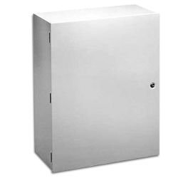

Purge Master (CES 455)
Features:
- Effectively cleans air flow pathways
- Unique "Pulse Purge" minimizes shop air utilization while providing superior cleaning.
- User selectable purge schedule
- emote Purge (initiate purge with control systems, PLC, etc.).
- Steel Enclosure (NEMA 4)
- 120VAC Power
Description:
The CES 455 Purge Master will ensure that air pathways for your critical process will remain clear and free of debris. Hundreds of these instrument have been deployed for over a decade in some of the most challenging environments.
Like all of our products, this instrument is guaranteed to be accurate by Six-Year Guarantee, the longest in the industry.
Product Options:
- 467 or 476 Auto-Zero Transmitter (further information)
- Stainless Steel (NEMA 4X) Enclosure
- Windowed enclosures available upon request
- Custom implementations
Similar / Complimentary Products:
- Auto-Zero Draft Range Transmitter (CES 467) - Auto-Zero transmitter, ideal for applications where accuracy and repeatability is critical (0.5-0.25% accuracy guaranteed). Perfect for remote or unattended applications.
- Auto-Zero Ultra-Low Draft Range Transmitter (CES 476) - Our top of the line transmitter and the ultimate in accuracy. Ideal for applications where accuracy and repeatability is critical (0.25 - 0.5% accuracy guaranteed). Measure pressures between 0.005 - 0.5" of H2O at full scale.